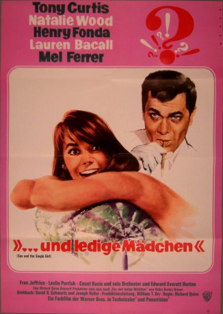

#11662 ...und ledige Mädchen
Alternativ: Sex and the Single Girl (Englischer Titel)
 
 IMDB-Wertung: 6.5 / 10
IMDB-Wertung: 6.5 / 10  Tomatometer: 60
Tomatometer: 60  Metascore: 0
Metascore: 0 
Hat sie oder hat sie nicht? Bob Weston (Tony Curtis), Redakteur eines Boulevardmagazins, will herausbekommen, ob Helen Gurley Brown (Natalie Wood), Autorin von "Sex und ledige Mädchen", in ihrem Buch über persönliche Recherchen berichtet. Um Näheres zu erfahren, bleibt ihm nur eins: dieser Frage persönlich nachzugehen!\r Curtis und Wood liefern sich in diesem Kampf der Geschlechter einen kessen Schlagabtausch, und in der ausgelassenen Komödie inspiriert von Gurley Browns Bestseller marschieren auch erfahrene Stars ins Gefecht: Henry Fonda und Lauren Bacall führen als Bobs Nachbarn einen köstlich handfesten Beziehungskrieg. Außerdem geraten Mel Ferrer, Edward Everett Horton und Count Basie ins vergnügliche Kreuzfeuer zwischen "Sollte sie oder sollte sie nicht?" und "Wird sie oder wird sie nicht?".
Jahr: 1964
Dauer: 64 Minuten
FSK:
Land: USA Studio: Warner Bros.Tonspuren:
Untertitel:
Auflösung: SD (640x352) Größe: 700 MB
Genre: Komödie, Liebe
Regisseur: Richard Quine
Drehbuch: Helen Gurley Brown, Joseph Heller, David R. Schwartz, Joseph Hoffman, Leslie H. Martinson
Soundtrack: Neal Hefti
Darsteller:
 Tony Curtis als Bob Weston
Tony Curtis als Bob Weston Natalie Wood als Helen Brown
Natalie Wood als Helen Brown Henry Fonda als Frank
Henry Fonda als Frank Lauren Bacall als Sylvia
Lauren Bacall als Sylvia Mel Ferrer als Rudy
Mel Ferrer als Rudy- Fran Jeffries als Gretchen
- Leslie Parrish als Susan
- Edward Everett Horton als The Chief
- Larry Storch als Motorcycle Cop
- Stubby Kaye als Helen's Cabbie
- Howard St. John als Randall
- Otto Kruger als Dr. Anderson
 Max Showalter als Holmes
Max Showalter als Holmes Helen Kleeb als Hilda
Helen Kleeb als Hilda Frank Baker als Pretzel Vendor (uncredited)
Frank Baker als Pretzel Vendor (uncredited) Larry J. Blake als Policeman (uncredited)
Larry J. Blake als Policeman (uncredited)- Barbara Bouchet als Photographer at Anniversary Party (uncredited)
 Paul Bryar als Toll Gate Guard (uncredited)
Paul Bryar als Toll Gate Guard (uncredited)- Claire Carleton als Woman (uncredited)
- William Fawcett als Bum (uncredited)
 Robert Foulk als Arresting Police Detective (uncredited)
Robert Foulk als Arresting Police Detective (uncredited)- Edmund Glover als Dr. A.L. Chickering (uncredited)
 George Holmes als Nightclub Patron (uncredited)
George Holmes als Nightclub Patron (uncredited) Charles Morton als Board Member (uncredited)
Charles Morton als Board Member (uncredited) Burt Mustin als Harvey (uncredited)
Burt Mustin als Harvey (uncredited) Jeffrey Sayre als Man at Stocking Show (uncredited)
Jeffrey Sayre als Man at Stocking Show (uncredited) Bert Stevens als Nightclub Patron at Anniversary Party (uncredited)
Bert Stevens als Nightclub Patron at Anniversary Party (uncredited)- Fredd Wayne als Frank (uncredited)
- William Lanteau als Sylvester
- Curly Klein als Sylvia's Cabbie
- Count Basie and His Orchestra als Themselves
- George E. Carey als Board Member (uncredited)
- Taggart Casey als Guard (uncredited)
- Buddy Catlett als Bassist in the Count Basie Band (uncredited)
- Philip Garris als Young Man (uncredited)
- Tom Harkness als Board Member (uncredited)
- Sharon Johnson als Sonia (uncredited)
- Mary Kovacs als Woman (uncredited)
- James Lanphier als Salesman (uncredited)
- Robert Locke Lorraine als Nightclub Patron (uncredited)
- Martin Martin als Board Member (uncredited)
- Cheerio Meredith als Emily (uncredited)
- Hans Moebus als Passerby (uncredited)
- Paddi O'Hara als Strange Woman (uncredited)
- Tom Quine als Board Member (uncredited)
- Irving Steinberg als Board Member (uncredited)
- Sheila Stephenson als Board Member (uncredited)
- Yvonne White als Woman (uncredited)
Datei: X:\1964\...und ledige Mädchen (1964, FSK, 640x352) CD1.avi seit 13.08.2019
Festplatte: Gemischt-01+Anime
 Es gibt insgesamt 22 Filme in der Gruppe '1964'
Es gibt insgesamt 22 Filme in der Gruppe '1964'